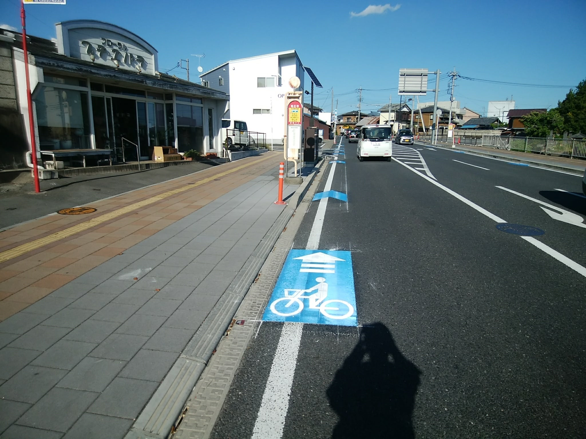

自転車専用通行帯工事
群馬県高崎市
高崎市内の主要道路において、自転車専用通行帯の路面標示工事を実施いたしました。青色の路面標示と自転車マークを正確に施工し、歩行者・自転車・自動車の安全な通行を実現しています。耐久性の高い塗料を使用し、長期間にわたり視認性を保持します。
群馬県高崎市
高崎市内の主要道路において、自転車専用通行帯の路面標示工事を実施いたしました。青色の路面標示と自転車マークを正確に施工し、歩行者・自転車・自動車の安全な通行を実現しています。耐久性の高い塗料を使用し、長期間にわたり視認性を保持します。

群馬県富岡市
富岡市内の交差点において、道路標識の新設工事を行いました。視認性の高い位置に設置し、ドライバーの安全運転をサポートします。基礎工事から標識板の取り付けまで、確実な施工で長期間の使用に耐える品質を実現しています。

群馬県前橋市
前橋市内の道路において、ガードレールの設置工事を実施しました。車両の逸脱を防ぎ、歩行者の安全を確保するため、強度と耐久性に優れた製品を使用しています。地形に合わせた正確な施工で、安全性と景観の両立を図っています。
群馬県前橋市
前橋市内の見通しの悪い交差点に、カーブミラーを設置しました。適切な角度と高さに調整し、ドライバーの視界を確保することで、交通事故の防止に貢献しています。定期的なメンテナンスにも対応し、常に最適な状態を保ちます。
群馬県高崎市
高崎市内の公共施設において、階段手すりの設置工事を行いました。高齢者や身体の不自由な方でも安心して利用できるよう、適切な高さと握りやすさを考慮した設計で施工しています。耐久性に優れた素材を使用し、長期間の使用にも対応します。

群馬県高崎市
高崎市内の施設において、フェンスの設置工事を実施しました。敷地の境界を明確にし、防犯性を高めるとともに、景観にも配慮したデザインを採用しています。強度と耐久性に優れた製品を使用し、長期間にわたり安全を確保します。

群馬県高崎市
荒れ果てたお庭を、美しく使いやすい空間へと生まれ変わらせました。50本以上の樹木を伐根し、雑草を一掃。その後、お客様のご要望に合わせて、新たな植栽と舗装を施工しました。

群馬県高崎市
高崎市内のヘアサロン様のファサードに植栽させていただきました。設計（植物の選定等）から施工（植栽作業）はもちろん、引き渡し後のアフターメンテナンス（剪定作業）も一貫して当社におまかせください。